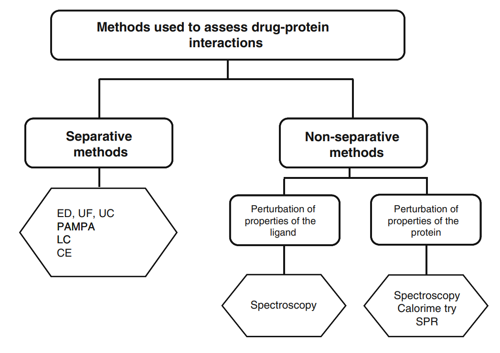
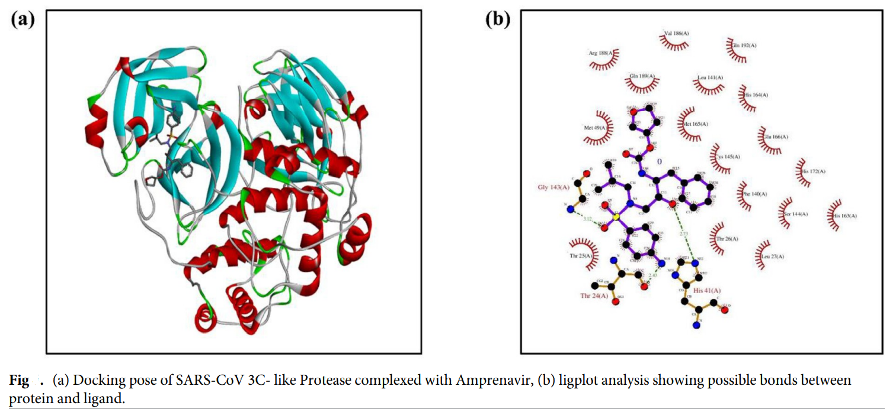

- Saswat K Pati
- Debankit Priyadarshi
- Discovering a new drug from scratch for a specific disease is a costly and time taking process.
- There are major disadvantages of the existing Drug Discovery methods, for example, even after years research, only one out of 1000 hits get approved as often the active compound maybe too toxic, not bioavailable, or too costly to manufacture.
- So we are instead applying a reverse approach. Repurposing.
- Drug Repurposing involves the investigation of existing drugs for new therapeutic purposes.
- The base of our model lies in the efficient prediction of drug-target interactions (DTIs).
- Much learning has already been done in this field. However, many interactions have not yet been detected, and the accuracy of the existing models is also not very high.
- The structures of the drug and the binding targets found in proteins are converted into a code that the computer can understand and use.
- We will primarily be converting into SMILES(simplified molecular-input line-entry system) a line notation to describe the chemical structures using short ASCII strings.
- We plan to train them and use the ML model to find the exact drug’s functional group-binding pocket of the protein interaction.
- We plan to order the drugs using an efficiency score. For this, the exact parameters affecting the interaction will be considered.
- The datasets we will be using are taken from DrugBank, SuperTarget, MATADOR, etc.
- Our primary source is DrugBank but we are not fully sure about the academic license approval, therefore we have mentioned a few of the sources.
- We will be using the approved drugs dataset to train our Model and for testing. We’ll also be checking using experimental drug data for drug uses.
- El-Behery, H., Attia, A. F. (2021). Efficient machine learning model for predicting drug-target interactions with case study for Covid-19. Computational Biology and Chemistry, 93, 107536. DOI
- Vuignier, K., Schappler, J., Veuthey (2010). Drug–protein binding: a critical review of analytical tools. Analytical and Bioanalytical Chemistry, 398(1), 53–66. DOI
- Mohapatra, S., Nath, P., Chatterjee, M. & Satapathi, S. (2020). Repurposing therapeutics for COVID-19: Rapid prediction of commercially available drugs through machine learning and docking. PLOS ONE, 15(11), e0241543. DOI
- Young, D. C. (2009). Computational Drug Design. Wiley. DOI
- For the ML model we plan to first start with the normal clustering algorithms and also Support Vector Machine(SVM). We will then try to use a decision tree based Random Forest(RF) Method.
- We also look forward to use the deep learning Artificial Neural Networks(ANN).
- Midway targets
- Collection and Preparation of the Dataset from DrugBank and correlating these data via PubChem (Saswat)
- Apply Clustering, Naive Bayes and SVM and try to improve on our Efficiency score while avoiding overfitting which is common in these databases. (Debankit)
- Applying domain knowledge (the possible interactions and bonding) to enhance efficiency (Saswat)
- Mid-way Presentation (Debankit)
- Final Presentation (both)
- Website Maintenance (both)
- We expect that our model can predict the test data results with high accuracy so as to be better than the existing algorithms.
- The extended use of the model can be that whenever a new small heterocyclic molecule is synthesised by some researcher, he/she can use our algorithm to predict the molecule’s likelihood to be a drug.
- Conversely by using this model researchers can save time and resources while producing a new drug as they can test their design’s applicability before even synthesizing it. (Basically, Gaussian for medicinal chemists)
- Drug repurposing (also called drug repositioning, reprofiling or re-tasking) is a strategy for identifying new uses for approved or investigational drugs that are outside the scope of the original medical indication.
- The whole idea is based on the idea that similar molecules are usually associated with similar protein targets. Thus, these approaches predict interactions based on similarities between connections protein.
- This method was overtly popular in 2020 when researchers were rushing to find out drugs for CoVID-19. Designing a completely new drug and getting it approved through several rounds of clinical trials and approval agencies is time taking and not worth it as it has been seen that less than 10% of interesting candidates make it to market.
- For proteins, conversion regulates amino acids in 7 groups according to their physical chemical properties. In case of Smiles strings, an encoding technique was used to convert each character as an integer to be used as a feature of the drug.
- El-Behery, H., Attia, A. F. (2021). Efficient machine learning model for predicting drug-target interactions with case study for Covid-19. Computational Biology and Chemistry, 93, 107536. DOI
- In this paper, the group aimed to train a model based on Drug Target Interactions (DTI’s) to identify the available drugs that can influence the Covid-19 viral proteins.
- The database used are structured data of Potential Proteins and Drugs from DrugBank and feature data on enzymes and ion channels from SuperTarget and Matador.
- The data is preprocessed to convert the sequence data into a set of description features.
- For proteins, conversion regulates amino acids in 7 groups according to their physical chemical properties. In case of Smiles strings, an encoding technique was used to convert each character as an integer to be used as a feature of the drug.
- This data is then applied on ML techniques like SVM, RF, XGBoost, LightBoost, ExtraTree, ANN, DBN and CNN to predict interaction between drugs and their target proteins.
- Experimental comparison among these learning techniques on the extracted data reveal that results obtained by ensemble techniques like LightBoost and ExtraTree were 98 % and F1-Score 0.97 which is better than the current methods usually used.
- This model can predict more undetected interactions and thus can be used as an efficient tool in drug repositioning. The model is applied on the proteins known to be affected by Covid-19 to predict possible interactions between these proteins the existing drugs announced in DrugBank which shows Umifeovir as an prospective choice.
- Evaluation Parameters :- The different measurements to predict the target reaction of drugs to evaluate and compare different techniques are:
- Accuracy: The accuracy of the test is its ability to distinguish negative from positive conditions correctly. To estimate the accuracy of the test, we should calculate the true positive negative ratio in all cases evaluated. If TP is true positive, TN is true negative, FP is false positive and FN is false negative, the accuracy can be stated as: Accuracy \(=\frac{T P+T N}{(T P+T N+F P+F N)}\)
- Precision and Recall: The precision visualizes the ratio of positive reactions that are correct. The reminder shows the ratio of positive reactions that have been correctly identified. It can be calculated as: \[\text { Precision }=\frac{T P}{(T P+F P)} \quad \text { Recall }=\frac{T P}{(T P+F N)}\]
- F1-score: F1-Score evaluates the balance between precision (p) & recall (r) in the system, and estimated as: \(F 1\) Score \(=\frac{\left.2^{*} \text { (Recall }^{\star} \text { Precision }\right)}{(\text { Recall }+\text { Precision })}\)
- Area under curve: The Receiver Operating Characteristic (ROC) curve shows the forecaster’s performance at different threshold values. Real positive rate values are drawn against incorrect positive rate values for curve formation. For comparison the curves, the area under the curve (AUC) is calculated. It represents a compilation of values at different points on the curve. The value of the area under the AUC curve ranges from 0 to 1.
- Mathew’s Correlation coefficient (mcc): Its value ranges from \(-1\) to 1, where \(-1\) is a false binary learning method and 1 is a completely valid binary learning method. Mathew’s correlation coefficient can be calculated as: \[m c c=\frac{T P^{*} T N-F P^{*} F N}{\sqrt{(T P+F N)^{*}(T N+F P)^{*}(T P+F P)^{*}(T N+F N)}}\]
- Mean Squared Error (MSE) MSE measures the average of squares of the errors - the average of the quadratic difference between actual value and estimated values. MSE measure of estimated quality - always non-negative, and values closer to zero are better. MSE estimated with the following equation: \[M S E=\frac{1}{n} \sum^{n}\left(\mathrm{Y}_{\mathrm{i}}-\widehat{Y}_{i}\right)^{2}\]
- Finally, the time it took for various training forecasts, as well as for prediction purposes, is also a metric assessment and comparison of different techniques.
- Vuignier, K., Schappler, J., Veuthey (2010). Drug–protein binding: a critical review of analytical tools. Analytical and Bioanalytical Chemistry, 398(1), 53–66. DOI
- This is a review of all important approaches used by scientists to characterize drug–protein binding. Vuignier et al. applied fundamental chemical kinetics theorems to explain drug-protein interactions.
- Vuignier et al. focused on drug–plasma-protein binding, specifically two major proteins, human serum albumin (HSA) and α1-acid glycoprotein (AGP) that are capable of binding with drugs and compared prevalent separative and non-separative methods.
- Separative and non-separative methods used for investigation of drug–protein binding. ED(equilibrium dialysis); UF (ultrafiltration); UC(ultracentrifugation); PAMPA(parallel artificial membrane permeability assay); LC(liquid chromatography); CE(capillary electrophoresis); SPR(surface plasmon resonance-based assays) 
- Mohapatra, S., Nath, P., Chatterjee, M. & Satapathi, S. (2020). Repurposing therapeutics for COVID-19: Rapid prediction of commercially available drugs through machine learning and docking. PLOS ONE, 15(11), e0241543. DOI
- This group from IITR looked for FDA approved drugs that can be repurposed for the treatment of COVID-19.
- It is known that SARS-CoV-2 spikes bind to receptors on the human cell surface called angiotensin-converting enzyme 2 (ACE2). So, SCRIPPS institute compiled a dataset of PubChem Bioassay (marked AID 1706, hosted on NCBI) containing around 290893 small drug molecules that interacted with SARS 3C-like Protease via various mechanisms that they didn’t delve into.
- Out of these small drug molecules, the ones that inhibited SARS Coronavirus action were labelled as Active and those that didn’t were labelled as inactive.
- This dataset was divided randomly into two sets: 80% of it was used for training using the Naive Bayesian classification Algorithm. Other algorithms like Random Forest, SMO, etc were applied but got overfit on the provided dataset.
- The rest 20% was used for Testing. With an accuracy of 73% they tested their model against 2388 FDA approved drugs (Database derived from DrugBank) and shortlisted 10 drugs that had a confidence level of more than 90%.
- All 10 of these were docked against potential protein molecule and Amprenavir (DrugBank ID–DB00701), having favourable minimum global energy of around -59.90 Kcal/mol and suitable bond lengths despite of the steric interactions at Ser121(B) and Pro122(B), was concluded as the ideal candidate. 
- As discussed earlier, our main motivation was based on the assumption proposed by El-Behery et al. that “Similar molecules are usually associated with similar protein targets” in their 2021 paper on Drug Repurposing using Machine Learning. But, What do you mean by similar molecules?
- Similar molecules must have similar number of basic structural building blocks like the functional groups that contributes to its selectivity and reactivity.
- Thereforth our idea, i.e. to build a machine learning model which finds similarities in protein binding properties between molecules using the number of different functional groups for our purpose. Seems easy!!! We were so wrong!!!
- We did extensive literature review to check if this idea was being employed already. This idea was new, thus we faced many roadblocks in gathering and pre-processing our dataset.
- We needed a dataset that contains the number of functional groups in different molecules along with the information that they are active or inactive in inhibiting a particular protein or protein substance that is in turn responsible for some disease.
- That seemed so easy, until we did not find any. Our primary source Drug Bank, was huge and inaccessible. And finally when we gained academic license to access the database it was mostly composed pharmacological data that we had no use of rather than cheminformatics data and 3D structures that we actually needed.
- Serendipitously, we came across a lab group database from SCRIPPS and Broad Institute public databases on E. Coli(causes cholecystitis, urinary tract infection (UTI), diarrhea and Pneumonia) and HIV respectively.
- We found a tool developed by an UC Irvine group that directly converted a 3D molecule represented in its SMILE representation into the number of different functional groups it contains.
- We never got it to integrate in our code, so we had to do it manually. We found two datasets containing the SMILE’s of a number of molecules and their activity in inhibiting the E.Coli bacteria and HIV virus.
- So we converted all the SMILE molecules into their corresponding number of functional groups in batches as the tool couldn’t handle large number of molecules at once.
- We have taken the prepared datasets as input and converted into two lists containing the features and labels.
- We have split the dataset into 30 percent testing data and 70 percent training data.
- We have implemented Decision tree classifier, Naive Bayes classifier, Random Forest classifier, SVM and SGD models.
- On E-coli inhibitor data:
- On HIV inhibitor data:
- We have tried to mix the data of both the E-Coli and HIV so that we can classify the different molecules to check if they are helpful in these two diseases. Our model holds and thus our plan has been quite successful as of yet.
- We have split the dataset containing around 3000 rows into 20 percent test data and 80 percent training data.
- We have used the Standard Scaler so as to not confuse the neural network regarding the weights of the features.
- We have used the tensorflow library to train our model. There are 4 Dense layers with 3 Relu Activation function and 1 last Sigmoid activation function.
- We have taken two different learning rate cases. In case of 0.03 learning rate, we found that after around 60 epochs, the model is overfitting. (Training Accuracy = 0.82 in 50 epochs)
- In 0.01 learning rate, we get a good result after 100 epochs. (Training Accuracy = 0.93 in 100 epochs)
- With Learning Rate of 0.03
- With Learning Rate of 0.01
- The confusion matrix for the first case with learning rate of 0.03:
- The confusion matrix for the first case with learning rate of 0.01:
- As is observable, the diagonal elements representing True Positives and True Negatives are better for the 0.01 learning rate case. This is the test data result we got with the learning rate of 0.01. Accuracy : 0.73
- Although these results might seem very promising and give the conception that now given any new small molecule our model can predict whether it can be used as a drug for some disease, that is misleading.
- Drug designing is a very complicated process(what we learned in the hard way) and this model, if extended to all major diseases, given their databases are publicly available(which isn’t, all due credit to big pharma), will definitely help drug designers to make better predictions.
- A small molecule being active for a particular disease causing protein doesn’t imply it can be used as a drug. ‘Active’ is a broad term as interpreted by Mohapatra et al. includes even those which just interact with the protein(not necessarily block the foreign disease causing element get attached).
- Other factors like Docking efficiency, Orientation of the molecule, tautomerism or conjugation if present also comes into play. But, there are softwares like AdMET and Vina AutoDOCK to do that. Our model acts as an enabling technology and helps make researchers make better predictions by narrowing down their search significantly.
- We believe, the output we get from our model can again be used in the model created in our reference papers, thereby increasing the accuracy of getting a viable new drug.
- If we can increase the number of datapoints, then we can get a better trained model.
Drug Discovery Using Machine Learning
CS460 - Group 14
Project By:
Project done to be submitted in the course of Machine Learning CS460
Supervised by Subhankar Mishra
Github Repository
Jump To:-
Proposal
Midway
Endway
Idea and Motivation Proposal

Data Sets To Be Used
Relevant Papers
Baselines and Expectation
Midway and Work Division
Expected Results and Further Insights
Presentation:
Midway Work
What is Drug Repurposing?
Paper Reviews:

Presentation:
Final Work
Recap
First step: Data Gathering and Pre pre-processing
Some Success
Second step: Baseline Implementation
| Models | Accuracy | F1 Score(weighted) |
|---|---|---|
| Decision Tree | 0.873 | 0.868 |
| Naive Bayes | 0.866 | 0.804 |
| Random Forest | 0.896 | 0.880 |
| SVM | 0.880 | 0.834 |
| SGD | 0.843 | 0.842 |
| Models | Accuracy | F1 Score(weighted) |
|---|---|---|
| Decision Tree | 0.890 | 0.885 |
| Naive Bayes | 0.860 | 0.801 |
| Random Forest | 0.920 | 0.908 |
| SVM | 0.896 | 0.866 |
| SGD | 0.843 | 0.849 |
| Models | Accuracy | F1 Score(weighted) |
|---|---|---|
| Decision Tree | 0.876 | 0.871 |
| Naive Bayes | 0.893 | 0.842 |
| Random Forest | 0.924 | 0.915 |
| SVM | 0.908 | 0.877 |
| SGD | 0.874 | 0.868 |
Deep Learning Model For the HIV Dataset
Precision : 0.77
Recall : 0.69
Limitations and Conclusions
Ideas to Improve
Presentation:
Thank You!!!With Love from Saswat and Debankit.